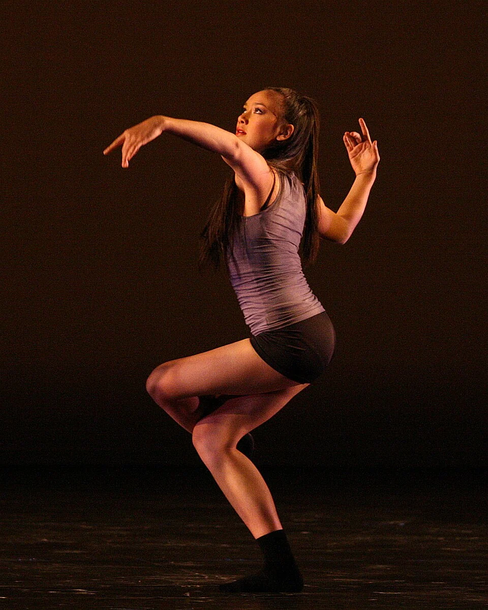

Dança / TeatroGratuitoCentroFonte consultada
Me Ame Como Se Fosse Uma Sexta-Feira no Centro
Espetáculo da LONAN Companhia de Dança, parte da Mostra Regional 2026 do Programa de Qualificação em Artes. Entrada gratuita; retirada de ingresso 30 minutos antes, sujeita à lotação.